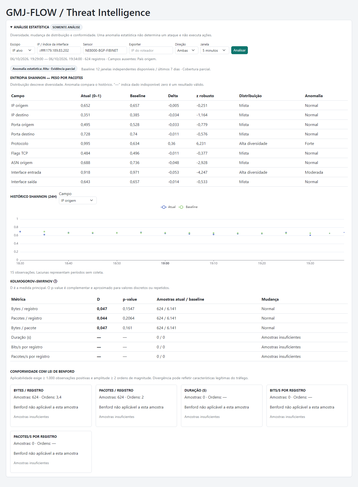

Análise estatística de tráfego — GMJ-FLOW
Entrega de desenvolvimento em 06/10/2026 · Servidor 172.20.10.40 · Horários da interface: America/Sao_Paulo; API: UTC.
Branch
feature/threat-statistics, diretório /root/gmj-flow-statistics-dev, a partir de baf3de08e599b769574263ee2af6f6eadd652766.
Nenhum serviço de produção reiniciado, nenhuma alteração de detecção/mitigação aplicada. Imagem candidata: gmj-flow-statistics-candidate:latest.1. Estado anterior e auditoria
Produção em /home/guilherme/GMJ-FLOW, FastAPI/Python 3.12, ClickHouse 24.8, SQLite para configurações e análises, frontend HTML/JavaScript com Bootstrap e ECharts. O hash SHA-256 do main.py do contêiner ativo foi comparado ao arquivo do repositório: são idênticos. As alterações locais anteriores em C:\projetos\GMJ-FLOW foram preservadas.
A tabela real é flowdb.flow_raw, MergeTree, particionada por toDate(flow_time), ordenada por (sensor, flow_time, src_ip, dst_ip, proto, dst_port). A retenção instalada é 96 horas, embora o SQL de instalação tenha outro padrão. Foram auditados APIs, autenticação/RBAC, cache de dashboard, padrões SQLite, componentes de Threat Intelligence, workers existentes e testes.
Campos temporais: flow_time DateTime64(3,'UTC'), received_at DateTime, flow_start/flow_end Nullable(DateTime64), duration_ms UInt64. Contadores: bytes/packets/flow_count UInt64, sample_rate UInt32. Sensor é LowCardinality(String); exporter e IPs são IPv6, incluindo IPv4 mapeado. Há ASN de origem/destino e nomes de AS. Não há país nem payload no schema.
A primeira leitura de cinco minutos contou 15.401.253 registros, sem duração positiva ou par start/end válido. As consultas analíticas mantêm o filtro existente time_classification='VALID_TIME'; registros em quarentena temporal não entram nos resultados. A amostra global final elegível teve 1.123.407 registros.
2. Arquivos alterados/adicionados
| Arquivo | Função |
|---|---|
backend/app/main.py | Somente import e inclusão do novo router, duas linhas. |
backend/requirements.txt | Adição de scipy==1.15.3. |
backend/app/api/traffic_statistics.py | Endpoints, validação e schemas Pydantic de resposta. |
backend/app/services/traffic_statistics_math.py | Shannon, baseline, K-S, Benford, thresholds e agregação overall. |
backend/app/services/traffic_statistics.py | Consultas, scopes, amostragem, cache e persistência. |
backend/app/services/traffic_statistics_worker.py | Coletor analítico opcional, separado dos workers existentes. |
frontend/index.html, frontend/threat-intelligence.js, frontend/threat-intelligence.css | Painel com componentes e assets já usados. Finais de linha originais preservados. |
docker-compose.statistics.yml | Profile opcional de coleta, limites de CPU/memória e volume analítico dedicado. |
deploy/Dockerfile.statistics-validation | Ambiente isolado de testes, sem inicializar a aplicação principal. |
tests/test_traffic_statistics.py, tests/test_traffic_statistics_auth.py, tests/traffic_statistics_frontend_harness.js | Matemática, persistência, API, isolamento, autenticação e frontend. |
scripts/validate_traffic_statistics.py | Validação reproduzível com flows reais e geração dos JSONs. |
docs/traffic-statistics-report.html e docs/traffic-statistics-evidence/ | Relatório, capturas e respostas reais. |
3. Persistência e migrations
Seguido o padrão de CREATE TABLE IF NOT EXISTS com sqlite_managed.open_managed. O banco analítico é separado do banco operacional, com WAL e busy timeout. Por padrão, fica ao lado do GMJFLOW_DB_PATH, como traffic-statistics.db; pode ser definido por GMJFLOW_STATISTICS_DB_PATH.
threat_statistics_windows: chave primária (scope, seconds, mode, end), resposta JSON com Shannon/baseline, K-S, Benford e metadados.threat_statistics_samples: chave primária (scope, seconds, end), amostras numéricas compactadas com zlib.- Índices temporais de retenção;
user_version=1; expurgo de registros com mais de oito dias durante novas gravações. Histórico sem novas gravações não recebe expurgo em background.
As tabelas foram criadas e testadas apenas nos bancos de desenvolvimento. Migration repetida passou no teste de idempotência. Nenhuma tabela, materialized view, TTL ou migration de ClickHouse foi alterada.
4. API, permissões e scopes
GET /api/threat-intelligence/statistics/summary GET /api/threat-intelligence/statistics/history scopeType=target | interface | global scopeId=<IP ou índice de interface> sensor=<nome real> exporter=<IP do roteador> direction=both | input | output window=1m | 5m | 15m | 1h weightMode=PACKET_WEIGHTED | FLOW_WEIGHTED # history também aceita: field=src_ip hours=24 # 1..168
Usado o prefixo real de Threat Intelligence para herdar autenticação e permissão anomalies.view. IP alvo inclui origem ou destino. Interface exige sensor + exporter + índice, evitando misturar ifIndex de roteadores distintos. GLOBAL aceita filtro por sensor/exporter. Parâmetros inválidos recebem 422. Falha/limite de consulta recebe 503, nunca um falso NO_DATA. Não existem novos endpoints de escrita ou ação.
5. Shannon: campos disponíveis
| Campo da API | Coluna real | Tipo |
|---|---|---|
| src_ip / dst_ip | src_ip / dst_ip | IPv6 |
| src_port / dst_port | src_port / dst_port | UInt16 |
| protocol | proto | UInt8 |
| tcp_flags | tcp_flags | UInt16 |
| src_asn | src_asn | UInt32 |
| input_interface / output_interface | input_if / output_if | UInt32 |
Nove campos disponíveis; src_country é informado em unavailable_fields. NULLs são excluídos; ASN e interface zero são tratados como informação desconhecida e excluídos. Porta zero e flags zero permanecem categorias válidas. Peso zero não contribui. A distribuição fica restrita aos valores conhecidos.
PACKET_WEIGHTED usa SUM(packets); FLOW_WEIGHTED usa COUNT de registros, sem multiplicar por flow_count. Não se aplica correção adicional por sample_rate. Shannon é calculado no ClickHouse pela identidade log2(N) − SUM(n·log2(n))/N. Cardinalidade 1 resulta em H=0 e normalizada=0; ausência retorna valores nulos/NO_DATA.
6. K-S efetivamente disponível
Com dados reais: bytes_per_flow, packets_per_flow e avg_packet_size. O termo “flow” da API representa um registro armazenado; a UI usa “registro”, pois o coletor pode agregar fluxos.
flow_duration, bps_per_flow e pps_per_flow são suportados pelos campos reais: duration_ms positivo, com fallback para flow_end > flow_start. Na validação, retornaram zero amostras válidas e INSUFFICIENT_SAMPLES. Não se fabricou duração. Bytes/pacote ignora packets=0.
SciPy ks_2samp(method='asymp'), mínimo de 30 observações válidas em cada amostra. D determina a classe: <0,10 NORMAL; <0,20 SMALL_SHIFT; <0,35 RELEVANT_SHIFT; a partir de 0,35 STRONG_SHIFT. O p-value é complementar e aproximado, especialmente para contagens discretas, empates e dependência entre flows.
7. Benford efetivamente disponível
Com observações positivas: bytes/registro e pacotes/registro. Duração, bps e pps estão suportados, mas ficaram não aplicáveis por falta de dados. Não aplicado a IP, portas, protocolo, flags nem bytes/pacote.
Gate inicial: pelo menos 1.000 valores positivos finitos e log10(max/min) ≥ 2. Zero, negativo e NULL são excluídos com contagem explícita. Distribuição esperada log10(1+1/d), d=1..9. Retorna distribuição observada/esperada, χ², p-value (8 graus de liberdade), MAD, amplitude e tamanho da amostra.
Classificação pelo MAD: <0,012 NORMAL_CONFORMITY; <0,018 MODERATE_DIVERGENCE; ≥0,018 STRONG_DIVERGENCE. χ² e p-value ficam como evidência adicional, sem regra de bloqueio. O gate é uma verificação básica de elegibilidade, não uma prova de que todo tráfego deveria seguir Benford.
8. Baseline e classificações
Histórico móvel de até sete dias de métricas persistidas, separado por scope completo, campo, modo de peso e tamanho de janela. O baseline usa janelas alinhadas e não sobrepostas. Só admite janelas cujo fim é anterior ou igual ao início da janela atual, excluindo a janela atual e suas sobreposições.
Mediana e MAD calculados sobre Shannon normalizada. robust_z=(current−median)/(1.4826·MAD); delta é retornado separadamente. São necessárias 12 janelas válidas por campo antes de classificar anomalia. Com MAD=0 e delta≠0, robust_z é nulo; com delta=0, é zero. A classificação utiliza regularized_z=delta/max(1.4826·MAD,0.01): |z| <3 NORMAL; <6 MODERATE; ≥6 STRONG. O piso explícito evita infinitos e alarmes por variações numéricas diminutas.
Distribuição: <0,25 CONCENTRATED; <0,75 MIXED; ≥0,75 HIGH_DIVERSITY. Alta diversidade não determina anomalia. Todos os limites ficam centralizados em StatisticsConfig e são publicados na resposta.
O status do baseline expõe WARMING_UP/PARTIAL/READY, número de janelas e extensão temporal disponível. READY requer mínimo de janelas e extensão de pelo menos 6,9 dias; não implica coleta sem lacunas. O exemplo real possui 12 janelas e cobertura parcial de aproximadamente 64 minutos. O histórico de sete dias se forma após a ativação; não foi inventado nem extraído de flows já expirados.
Overall é o máximo das classes disponíveis: STRONG/STRONG_SHIFT/STRONG_DIVERGENCE → HIGH; MODERATE/SMALL_SHIFT/RELEVANT_SHIFT/MODERATE_DIVERGENCE → MODERATE; alguma evidência normal e nenhuma superior → NORMAL; sem evidência classificável → INSUFFICIENT_DATA. Não há pesos nem score. A API e UI indicam evidência parcial quando faltam comparações Shannon/K-S.
9. Amostragem, atualização e cache
A janela termina no último minuto completo. A UI atualiza a cada 60 segundos apenas quando a área está ativa, o painel aberto e a aba visível. Respostas da mesma janela ficam persistidas e são reutilizadas inclusive após restart.
Sem sampling key na tabela: filtro por cityHash64 de timestamp, sensor, exporter, IPs, portas, protocolo, contadores, flags e interfaces; limiar calculado pela contagem elegível; seleção ordenada pelo hash com top-k de até 10.000. Não há ORDER BY rand(). Registros estritamente idênticos compartilham hash — limitação sem identificador único no schema.
O histórico guarda no máximo 512 observações de cada janela alinhada, sem sobreposição, compactadas. Seleção por prioridade SHA-256 e limite de 20.000 observações no baseline. Isso representa estratos temporais, não ponderação pelo volume de tráfego de cada janela. O baseline numérico exclui qualquer janela sobreposta e tem cache de cinco minutos via MemoryDashboardCache existente. Não há varredura automática de sete dias de flow_raw.
Coletor opcional python -m app.services.traffic_statistics_worker: configuração JSON GMJFLOW_STATISTICS_SCOPES com 1..8 scopes, janela 5m, modo PACKET_WEIGHTED, ciclo de um minuto. Não foi ativado. FLOW_WEIGHTED e outras janelas ficam disponíveis sob demanda via API. A ausência de coleta aparece como lacuna no gráfico.
10. Performance observada
| Escopo | Registros válidos / 5m | Resumo | Repetição da janela |
|---|---|---|---|
| IP alvo | 643 | 0,833 s | 11 ms |
| Interface | 183.011 | 2,288 s, incluindo primeiro carregamento SciPy nessa execução | 12 ms |
| Global | 1.123.407 | 1,197 s | 14 ms |
Consultas Shannon globais: aproximadamente 52–113 ms por campo; contagem: 33 ms; amostragem: 332 ms. Rodada anterior: interface 0,83 s; global 1,10 s. Cada resposta inclui os tempos por query. Medições pontuais, não um teste prolongado de carga.
Filtros temporais em PREWHERE, partições diárias e sensor quando informado. Limites por consulta: readonly=1, duas threads, 15 segundos, 512 MiB, máximo de 100 milhões de linhas lidas; estouro gera erro, sem resultado parcial. Um lock por processo serializa os cálculos. Primeira solicitação simultânea em processos diferentes ainda pode duplicar trabalho antes da persistência; a chave primária impede duplicar snapshots.
11. Testes e regressão
- 85 testes aprovados: 30 testes novos de matemática/serviço/API; três de autenticação/rotas; regressão de frontend Threat Intelligence e autenticação/RBAC.
- Cobertos Shannon uniforme/concentrado/vazio/NULL e pesos; mediana/MAD/outliers/MAD zero/exclusão de sobreposição; K-S igual/diferente/pouca amostra/NaN; Benford compatível/divergente/pouca amostra/faixa estreita/zeros/negativos; cache, scopes, validação, migration e isolamento de dependências.
- Nove verificações do harness JavaScript passaram. Playwright validou desktop 1440px e celular 390px, nove campos Shannon, seis linhas K-S, seleção de histórico, erro sem dados antigos e ausência de overflow horizontal; zero page errors.
- A suíte adicional de Threat Intelligence teve 15 aprovações e duas falhas CEREAL2. Repetida no código original sem a feature: as mesmas duas falhas, relacionadas às fixtures de eventos antigos. Não alteradas para encobrir resultados.
- Endpoints existentes continuam registrados e protegidos; GET /health de produção retornou 200. Nenhum teste iniciou workers operacionais de produção.
12. Build, lint e typecheck
Ruff nos novos módulos Python, testes e script: aprovado. compileall backend/app: aprovado. node --check frontend/threat-intelligence.js: aprovado. git diff --check: aprovado. Compose com o override de estatísticas: configuração válida.
Build completo com backend/Dockerfile aprovado, imagem candidata isolada. Smoke da imagem: 448 rotas, OpenAPI gerado e K-S funcional. Frontend é JavaScript estático: não possui build TypeScript nem typecheck configurado. Não foi introduzido um framework novo. Permanecem avisos preexistentes de depreciação FastAPI/Pydantic e IDs OpenAPI duplicados em endpoints antigos.
SciPy foi avaliado como dependência binária apropriada para Python 3.12, evitando implementação estatística própria. Importação é tardia, apenas quando K-S/Benford têm amostra suficiente; o primeiro uso adiciona latência de inicialização. Referência: documentação oficial de ks_2samp.
13. Limitações encontradas
País ausente; duração sem observações válidas; retenção bruta de quatro dias; baseline inicial parcial. Não há garantia de independência estatística dos flows, e os p-values não devem ser interpretados como probabilidades de ataque. Diferentes políticas de sampling dos exporters podem influenciar comparações globais; o modo por pacotes usa os contadores armazenados. Preferir scopes consistentes por sensor/interface para comparar períodos.
Não houve teste de carga de sete dias, nem comprovação de custo para todos os scopes de 1h; essas consultas estão protegidas pelos limites citados. O histórico cresce por escopo consultado/coletado. API sob demanda e worker opcional compartilham o arquivo analítico quando configurados pelo override.
14. Itens conscientemente não implementados
Payload entropy; ações automáticas; mudanças de detecção, mitigação, BGP, PBR, scripts operacionais ou Wanguard; score arbitrário; criação de um segundo attack event. CLIENT e ATTACK_EVENT ficaram reservados para evolução e não são aceitos silenciosamente pela API. Sem enriquecimento GeoIP externo por registro. Sem backfill automático de toda a retenção; apenas pequenas janelas reais foram reconstruídas no banco de validação.
15. Interface final e exemplos reais
Painel expansível “ANÁLISE ESTATÍSTICA” dentro de Threat Intelligence: filtros, Shannon com distribuição/anomalia separadas, gráfico 0..1 com campo selecionável, K-S destacando D e cards Benford com tabela de dígitos ou motivo de não aplicabilidade. Dados faltantes aparecem como travessão, nunca como baixa entropia. Alta diversidade não recebe vermelho automaticamente.
Captura desktop · Captura celular. Capturas do componente isolado com estilos reais e respostas reais da API de desenvolvimento; não representam uma implantação em produção.


Ver captura desktop

Respostas completas: IP alvo com baseline parcial, interface, global, histórico temporal.
// Extraído da resposta real do IP alvo, 06/10/2026 19:29–19:34 BRT
{
"field": "src_ip",
"entropy_normalized": 0.6524295557155677,
"baseline_median": 0.657349670028604,
"baseline_mad": 0.013240870259318804,
"robust_z": -0.2506309309522866,
"distribution_classification": "MIXED",
"anomaly_classification": "NORMAL"
}
// K-S bytes/registro: D=0.0472486315; p=0.1547102908;
// 624 amostras atuais / 6.141 históricas; NORMAL.
// Benford no mesmo alvo: applicable=false, INSUFFICIENT_SAMPLES.
// Benford global: 10.000 amostras, 4.4036 ordens,
// MAD=0.0492608394; STRONG_DIVERGENCE — não é veredito de ataque.
16. Ativação e risco restante
A feature está pronta para revisão e ativação autorizada. A base de produção permanece em baf3de0; código, imagem candidata e dados de validação estão separados. A alteração no backend principal é exclusivamente o registro do router. Não há importações do módulo analítico para serviços de mitigação/detecção, nem chamadas a eles.
Para habilitar a coleta contínua, definir scopes reais em GMJFLOW_STATISTICS_SCOPES e usar o override docker-compose.statistics.yml. O serviço opcional tem uma CPU, 512 MiB e somente o volume de estatísticas. Até lá, o histórico é produzido por consultas da API. A criação das tabelas analíticas ocorre no primeiro uso, sem tocar ClickHouse.
Deploy e reinício não foram executados. O item 15 do anexo determina: “Não faça deploy de produção ou restart de serviços sem autorização explícita.” A autorização pendente é para publicar os arquivos/imagem e reiniciar somente o backend necessário; serviços de detecção/mitigação não precisam ser reiniciados para esta entrega. A escolha dos scopes do coletor deve respeitar o volume observado.